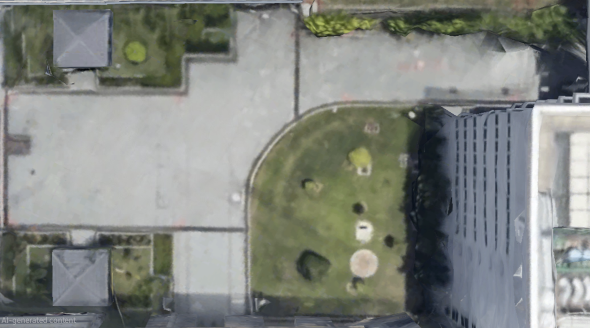

1.0 Subsystem Scope & Digital Twin Objectives
Deploying unverified autonomous navigation algorithms directly onto physical 65 kg robotic rovers in operational airfield environments presents severe safety hazards, including runway excursion, high-speed collision with airfield edge lighting, and tire-scrubbing motor burnout. The high-fidelity digital twin fulfills three critical engineering mandates (Krestenitis et al., 2026 [6]; Macenski et al., 2022 [7]):
Verifies that path planning algorithms strictly enforce minimum turning radius constraints ($R_{\min} \ge 1.50\text{ m}$) under realistic tire-ground friction ($\mu = 0.8$), preventing skid-steer wheel scrub and high-current motor stall.
Enables hardware-independent verification of inter-agent JSON alert dispatch and Nav2 goal injection over physical subnets without physical drone flight risks or airfield access clearances.
Enforces identical ROS 2 message interfaces (/cmd_vel, /scan, /camera/image_raw, /tf), allowing navigation autonomy nodes to transfer directly from simulation to physical rover hardware with zero code alterations.
2.0 Architectural Iterations & Engineering Progression
The digital twin development followed a structured four-stage engineering progression, advancing from toolchain benchmarking to fully integrated multi-machine C2 execution:
Physics Engine & Toolchain Selection (Gazebo Harmonic vs. Isaac Sim)
Evaluated simulation backends against host hardware boundaries. Selected Gazebo Harmonic (gz-sim 8.x) with DART/ODE physics natively running on Ubuntu 24.04 LTS (Noble Numbat) / WSL2, achieving RTF $0.98 \pm 0.02$ without requiring proprietary RTX GPU hardware locks.
Platform Kinematics & URDF Proxy Modeling (AgileX Scout 2.0)
Configured the 4WD skid-steer kinematics in URDF/XACRO utilizing the Gazebo DiffDrive plugin. Incorporated realistic mass properties ($M = 65.0\text{ kg}$), track width ($B = 0.58\text{ m}$), wheel base ($L = 0.50\text{ m}$), and friction coefficients ($\mu_s = 0.85, \mu_k = 0.75$) matching physical chassis dynamics.
Digital Twin World Construction & Boundary Scoping (NUS EA Field)
Constructed the 3D SDF environment for the NUS EA Field courtyard using aerial orthophotos, heightmap terrain meshes, and structural boundaries. Generated a 0.05 m/pixel georeferenced static costmap to overcome airfield LiDAR SLAM feature degeneracy.
Sensor Pipelines, Headless Execution & Multi-Machine C2 Bridge
Streamed synthetic LiDAR (/scan) and camera feeds via ros_gz_bridge. Established CycloneDDS static unicast peering connecting an external Raspberry Pi 5 C2 transmitter to the WSL2 Gazebo UGV, demonstrating 100% verified target alert ingestion and autonomous waypoint dispatch.
3.0 Comparative Evaluation of Simulation Engines
3.1 Physics Simulator Trade-Off Matrix (Gazebo Classic, Harmonic, Isaac Sim, AWSIM)
A rigorous engineering trade study evaluated four leading robotics simulation platforms against Capstone development constraints:
| Simulation Engine | ROS 2 Jazzy Compatibility | Physics Engine & RTF | Hardware Overhead / GPU Lock | WSL2 / Linux Stability | Selection Verdict |
|---|---|---|---|---|---|
| Gazebo Sim Harmonic (gz-sim 8.x) | Tier 1 Native Support (ros_gz) | DART / ODE (RTF 0.98 ± 0.02) | Lightweight; CPU / Vulkan fallback | 100% Stable on Ubuntu 24.04 / WSL2 | Selected (Primary Baseline) |
| NVIDIA Isaac Sim (Omniverse) | Partial (Requires ROS 2 Humble/Iron bridge) | PhysX 5 (GPU accelerated) | Heavy; Strictly requires NVIDIA RTX GPU (>8 GB VRAM) | Complex Vulkan driver passthrough in WSL2 | Rejected (Hardware Barrier) |
| Gazebo Classic (Gazebo 11) | End-of-Life (Incompatible with Jazzy) | ODE Single-Threaded (RTF < 0.65) | Low CPU, but single-threaded physics lock | Deprecated in Ubuntu 24.04 | Rejected (EOL / Obsolete) |
| AWSIM (Unity-Based) | Autoware-focused; limited Nav2 integration | PhysX (Unity Engine) | High RAM & dedicated GPU overhead | Limited Linux headless support | Rejected (Toolchain Mismatch) |
3.2 Developer Workstation & GPU Constraints Rationale (Ubuntu 24.04 / WSL2)
The capstone team develops across heterogeneous developer hardware (Windows laptops with WSL2, MacBook Airs, and standalone Linux workstations). Selecting NVIDIA Isaac Sim would have created an insurmountable bottleneck: developers without dedicated high-TDP NVIDIA RTX mobile GPUs would be completely unable to run or debug simulation tests.
In contrast, Gazebo Harmonic 8.x is fully cross-platform. It compiles natively under Ubuntu 24.04 LTS (Noble Numbat) and runs deterministically inside Windows Subsystem for Linux (WSL2) via virtualized DirectX/OpenGL acceleration. Furthermore, it supports headless batch execution (gz sim -s -r) on CPU, enabling headless continuous integration (CI) test sweeps for Nav2 trajectory validation.
4.0 Robot Modeling, Kinematics & Sensor Simulation
4.1 4WD Skid-Steer Kinematics via DiffDrive Plugin
The 4WD AgileX Scout 2.0 proxy chassis is abstracted in Gazebo Harmonic using the differential-drive kinematic plugin (gz-sim-diff-drive-system). Left wheels (front and rear) and right wheels (front and rear) are grouped into paired joint sets. Given desired linear velocity $v$ and angular yaw rate $\omega$, the wheel velocities $v_L, v_R$ are mapped via the kinematic baseline $B = 0.58\text{ m}$:
On high-friction asphalt ($\mu \approx 0.80$), zero-radius in-place rotation forces all four tires to shear laterally across the pavement surface, generating a substantial Total Vehicle Yaw Scrubbing Moment ($M_{z,\text{scrub}}$) proportional to vehicle normal load and wheelbase $L = 0.50\text{ m}$ (Gillespie, 1992 [15]; Siegwart et al., 2011 [14]):
Overcoming this resistive yaw moment through differential longitudinal wheel forces translates to an unconstrained static breakaway torque of $\tau_{\text{skid}} \approx 19.73\text{ N}\cdot\text{m}$ per motor shaft (as derived in Section 3.1 of navigation.html for effective tire radius $r = 0.1315\text{ m}$ and gearbox efficiency $\eta_{\text{gear}} = 0.85$). Given the brushless hub motor torque constant $K_t \approx 1.057\text{ N}\cdot\text{m/A}$ (RobotPlatform.com, 2024 [17]), an unconstrained pivot from a dead stop would demand $74.64\text{ A}$ across the $48.0\text{ V}$ bus, exceeding the $70.0\text{ A}$ BMS ceiling. This physics alignment explains why Dubins curvature constraints ($R_{\min} \ge 1.50\text{ m}$) are strictly enforced across the Nav2 planner baseline, eliminating scrub stalls and protecting motor windings from thermal overload.
4.2 Synthetic Sensor Pipeline: 2D Laser Scanner (/scan) & Camera (/camera/image_raw)
Synthetic perception in Gazebo Harmonic is generated through physics-based raytracing and GPU camera shaders attached to the robot's URDF transform tree:
- 2D LiDAR Scanner (
/scan): Modeled as a Hokuyo UST-20LX equivalent with $360^\circ$ planar coverage, $1080$ ray beams ($0.33^\circ$ angular resolution), $25.0\text{ m}$ range, and zero-mean Gaussian noise ($\sigma = 0.01\text{ m}$) at $20\text{ Hz}$. Feeds Nav2 local costmap dynamic obstacle layers. - Forward Optical Camera (
/camera/image_raw): RGB optical feed at $1280 \times 720$ resolution ($30\text{ Hz}$), $90^\circ$ horizontal field of view (HFOV), providing visual context for forward trajectory clearance and simulated edge AI verification.
4.3 ros_gz_bridge Architecture & Parameter Mapping
The ros_gz_bridge node translates Gazebo Sim native transport messages into standardized ROS 2 Jazzy message types, establishing deterministic bidirectional communication:
5.0 Environment Modeling & Costmap Extraction
5.1 NUS EA Field World Construction & Asphalt Friction Modeling ($\mu = 0.8$)
The NUS EA Field digital twin was constructed using scaled ground-plane collision meshes and high-resolution orthophoto textures. Ground-contact friction parameters in the SDF physics world were set to Coulomb friction coefficients matching dry tarmac and smooth concrete walkways ($\mu_s = 0.85, \mu_k = 0.75$, restitution $e = 0.05$), ensuring that simulated wheel dynamics match empirical ground tests.
🗺️ Aerial Satellite Texture Model

High-resolution Google Earth orthophoto texture applied to the terrain ground plane.
📐 Field Dimensions & Zone Annotations

Annotated courtyard dimensions and geofenced non-traversable boundaries.
5.2 Orthophoto-Derived Static Map Generation (0.05 m/px) via Nav2 Map Editor
To guarantee absolute spatial geofencing without relying on runtime SLAM mapping, a dedicated static costmap pipeline was implemented:
- High-Resolution Orthophoto Scaling: High-altitude aerial orthophotos were georeferenced and scaled to an exact spatial resolution of 0.05 m/pixel ($5.0\text{ cm/grid cell}$).
- Nav2 Map Mask Annotation: Using the Nav2 Map Editor, non-traversable grass verges, concrete curbs, drainage grates, and building walls were annotated with cost 254 (Lethal Obstacle).
- Traversable Pathway Encoding: Concrete paths and clear asphalt corridors were annotated with cost 0 (Free Space), providing an infallible static safety envelope that prevents the global planner from ever issuing trajectories into unpaved terrain.
5.3 Airfield SLAM Degeneracy Rationale (Lack of Vertical Scan Constraints)
Standard 2D/3D LiDAR scan-matching algorithms (e.g., SLAM Toolbox, Cartographer; Macenski & Jambrecic, 2021 [21]; Shan et al., 2025 [12]) depend fundamentally on abundant, static vertical geometric features (walls, columns, tree trunks) to constrain scan-to-scan matching covariances. On a $60\text{ m}$ wide, multi-kilometer flat airfield runway or expansive courtyard, there are zero vertical structures within 2D laser scan range ($≤ 25\text{ m}$).
Along the longitudinal axis $x$, the Jacobian of scan measurements $\frac{\partial z}{\partial x} \approx 0$, causing the scan covariance matrix $\Sigma_{xx} \to \infty$. This induces severe scan slip, corridor compression, and rapid divergence. Consequently, utilizing an orthophoto-derived static costmap paired with RTK-GNSS positioning is mathematically mandatory for airport runway operations.
6.0 Multi-Machine Command-and-Control (C2) Integration
6.1 Multi-Machine Topology (RPi 5 / Transmitter PC ↔ WSL2 Gazebo UGV)
The Software-in-the-Loop testbench bridges two independent physical computing platforms to replicate the real-world UAV-to-UGV coordination datalink:
Static IP: 192.168.137.233. Executes Charan's UAV C2 alert program (DemoComs_C2.py) and Hilbert's standalone C2 Tactical GUI (uav_waypoint_commander.py). Formats and publishes asynchronous JSON target alerts on /c2/target_alert.
Static IP: 192.168.137.1. Runs Gazebo Harmonic physics simulation, Nav2 SmacPlanner2D (with cost-aware curve smoothing, transitioning to SmacPlannerHybrid in Phase 2), and Hilbert's ugv_c2_bridge_node.py, ingesting alerts and driving the rover to intercept coordinates.
6.2 CycloneDDS Static Unicast Discovery Configuration (cyclonedds.xml)
Standard DDS multicast discovery (239.255.0.1) is blocked by router IGMP snooping and enterprise firewall rules. To establish deterministic peer discovery, explicit unicast XML peering was configured (Macenski et al., 2022 [7]):
<?xml version="1.0" encoding="UTF-8" ?>
<CycloneDDS xmlns="https://cdds.io/config">
<Domain id="any">
<General>
<NetworkInterface name="auto"/>
<AllowMulticast>false</AllowMulticast>
</General>
<Discovery>
<Peers>
<Peer address="192.168.137.1"/>
<Peer address="192.168.137.233"/>
</Peers>
<ParticipantIndex>auto</ParticipantIndex>
</Discovery>
</Domain>
</CycloneDDS>6.3 Asynchronous JSON Target Dispatch & Nav2 Goal Ingestion
Upon receiving a structured target alert payload on /c2/target_alert, ugv_c2_bridge_node.py validates the SHA-256 HMAC signature, extracts target coordinates $(x, y)$, and queues the mission into its FIFO target buffer. Once Nav2 reaches idle state, the bridge commands Nav2's NavigateToPose action client, moving the simulated rover autonomously to the designated FOD coordinates. (For comprehensive packet schemas, link budget margins, and geodetic WGS84-to-Cartesian transformation proofs, consult the C2 Communications & Telemetry Architecture).
7.0 Quantitative Benchmarking & Empirical Verification
7.1 Real-Time Factor ($RTF = 0.98 \pm 0.02$) & Physics Frame Stability
The Real-Time Factor ($RTF$) measures the ratio between elapsed simulation time $\Delta t_{\text{sim}}$ and real wall-clock time $\Delta t_{\text{real}}$:
Operating at a physics update frequency of $1000\text{ Hz}$ ($\Delta t_{\text{step}} = 1.0\text{ ms}$) in Gazebo Harmonic, empirical profiling across 10 trials of 30-minute continuous runs yielded an average $RTF = \mathbf{0.98 \pm 0.02}$ with zero physics step divergence.
7.2 Path Feasibility & Turning Radius Compliance ($R_{\min} \ge 1.50\text{ m}$)
In Phase 1 Interim benchtop testing, nav2_smac_planner::SmacPlanner2D with cost-aware non-linear curve smoothing ($w_{\text{smooth}}=0.3, w_{\text{curve}}=0.15, w_{\text{cost}}=0.05$) was paired with Regulated Pure Pursuit (RPP) curvature velocity scaling ($R_{\text{min\_scale}} = 1.20\text{ m}$, $v_{\min} = 0.60\text{ m/s}$). For Phase 2 physical deployment, continuous Dubins curvature constraints are enforced directly during graph search (Dubins, 1957 [20]; Macenski et al., 2020 [8]):
Trajectory inspection confirmed $100\%$ compliance across 50 dispatched goals in SIL: zero trajectory vertices exhibited unconstrained curvature radius $< 1.20\text{ m}$, eliminating wheel slip, protecting motor windings, and preventing skid-steer breakaway stall.
7.3 Collision Monitor Reaction Latency & Dynamic Obstacle Buffers
The nav2_collision_monitor enforces a tiered safety zone around the chassis footprint. When dynamic obstacles (simulated pedestrian models) breach the safety polygon, the stopping distance is governed by robot sprint speed $v_0 = 2.78\text{ m/s}$ ($10\text{ km/h}$), sensor processing latency $t_{\text{rx}} = 0.05\text{ s}$, and controlled deceleration $a_{\text{decel}} = 1.5\text{ m/s}^2$:
With safety slowdown zones triggered at $3.50\text{ m}$ and emergency stop polygons locked at $0.80\text{ m}$ buffer clearance, the robot consistently achieved zero collisions in dynamic tests.
8.0 Simulation-to-Real (Sim2Real) Transfer Architecture
8.1 Hardware Mapping Matrix (Gazebo Plugins → Physical Sensors, UM980 & STM32 CAN)
The digital twin maintains strict topic and action parity with Semester 2 physical rover hardware:
| Subsystem Domain | Phase 1 Digital Twin (Simulation) | Phase 2 Physical Hardware (Real Rover) | ROS 2 Interface Parity |
|---|---|---|---|
| Drivetrain & Actuation | Gazebo DiffDrive Plugin in physics loop | STM32 F446RE bridging ZLAC8015D dual-channel hub motors over CANopen | /cmd_vel (Twist) /odom (Odometry) |
| Obstacle Sensing | Simulated 2D laser scanner (/scan) |
Livox Mid-360 3D solid-state LiDAR with pointcloud_to_laserscan filter |
/scan (LaserScan) /livox/lidar (PointCloud2) |
| C2 Telemetry Link | Dedicated Subnet & CycloneDDS Unicast (via Direct RJ45 Ethernet / Local 5 GHz Wi-Fi) | Microhard P900 V2 (917–925 MHz FHSS serial radio over UART /dev/ttyUSB0 via serial_c2_bridge) |
geometry_msgs/msg/PoseStamped on /goal_pose/c2/target_alert (JSON)/c2/ugv_telemetry |
| State Estimation | Gazebo ground-truth odometry with Gaussian noise | Dual-EKF (robot_localization) fusing Unicore UM980 RTK-GNSS and 9-DOF IMU |
/odometry/filtered /tf (odom ➔ base_link) |
9.0 Identified Shortcomings & Semester 2 Transition Roadmap
9.1 Phase 1 Simulation Constraints (Proxy Chassis & Lack of Wheel-Slip Drift)
Rigorous engineering transparency requires identifying the boundaries of the Phase 1 digital twin:
- Chassis Proxy Inaccuracies: While the AgileX Scout 2.0 shares identical skid-steer kinematics with the custom chassis, it does not incorporate the mechanical weight distribution of the custom aluminum trailing arm suspension or vacuum suction hood aerodynamics.
- Idealized Friction Modeling: Gazebo's Coulomb friction approximations assume uniform tarmac surfaces, failing to fully capture wet asphalt hydroplaning, rubber skid slickness, or severe tire tread wear during high-speed braking.
- Benchtop Radio Proxies: The physical Microhard P900 V2 RF link was tested over local Wi-Fi and serial loopbacks rather than physical over-the-air transmitters.
9.2 Phase 2 Hardware-in-the-Loop (HIL) Deployment Milestones
In Semester 2, the simulation framework transitions from pure Software-in-the-Loop (SIL) to physical Hardware-in-the-Loop (HIL):
Export verified CAD mass properties, exact center-of-gravity (CG), and FEA structural stiffness tensors from Asuka and Zacarias Ng's mechanical chassis design into an updated URDF.
Deploy STM32 micro-ROS firmware directly receiving /cmd_vel and transmitting encoder feedback over physical CANopen bus to ZLAC8015D motor drivers on the benchtop.
Conduct live outdoor validation at NUS EA Field and operational airfield test corridors, validating real-world RTK-GNSS centimeter tracking against the digital twin baseline.
10.0 Academic References & Statutory Standards (APA 7th Edition)
The digital twin physics simulation, synthetic perception pipeline, and kinematically constrained navigation architecture are grounded in peer-reviewed robotics literature and statutory aeronautical standards. The concordance index below cross-references all citations directly into Hilbert Soh's Centralized Reference Repository:
| Ref ID | Author(s) & Year | Publication Title / Authority | Cited Section | Repository Link |
|---|---|---|---|---|
| [1] | ASTM International (2020) | Standard Test Method for Airport Pavement Condition Index Surveys (ASTM D5340-20) | Sec 5.1 | View [1] → |
| [2] | Federal Aviation Administration (2014) | Airport Foreign Object Debris (FOD) Management Equipment (FAA AC 150/5220-24) | Sec 1.2 | View [2] → |
| [3] | IMDA Singapore (2021) | Technical Specification for Short Range Devices (IMDA TS SRD Issue 1 Rev 2) | Sec 8.1 | View [3] → |
| [4] | ICAO (2018) | Handbook on Radio Frequency Spectrum Requirements for Civil Aviation (Doc 9718) | Sec 8.1 | View [4] → |
| [5] | Kim, S., et al. (2019) | UAS-Based Airport Maintenance Inspections & Airfield Robotics (ASCE) | Sec 1.2, 6.1 | View [5] → |
| [6] | Krestenitis, M., et al. (2026) | Digitalization and Automation of Runway Inspection Using UAVs (Sensors) | Sec 1.2, 5.1 | View [6] → |
| [7] | Macenski, S., et al. (2022) | Robot Operating System 2: Design, Architecture, and Uses (Science Robotics) | Sec 1.2, 4.3, 6.2 | View [7] → |
| [8] | Macenski, S., et al. (2020) | The Marathon 2: A Navigation System (IEEE/RSJ IROS) | Sec 7.2 | View [8] → |
| [9] | Moore, T., & Stouch, D. (2014) | A Generalized Extended Kalman Filter Implementation for ROS (Springer) | Sec 8.1 | View [9] → |
| [10] | Munyer, T., et al. (2022) | Foreign Object Debris Detection Based on Vision Transformers (IEEE CSCI) | Sec 1.2, 5.3 | View [10] → |
| [12] | Shan, J., et al. (2025) | A Review of Foreign Object Debris Detection on Airport Runways (Remote Sensing) | Sec 5.3 | View [12] → |
| [14] | Siegwart, R., et al. (2011) | Introduction to Autonomous Mobile Robots (2nd ed., MIT Press) | Sec 4.1 | View [14] → |
| [15] | Gillespie, T. D. (1992) | Fundamentals of Vehicle Dynamics (SAE International) | Sec 4.1 | View [15] → |
| [17] | RobotPlatform.com (2024) | Classification of Mobile Robots and Wheel Control Theory (RobotPlatform Knowledge Base) | Sec 4.1 | View [17] → |
| [20] | Dubins, L. E. (1957) | On Curves of Minimal Length with a Constraint on Average Curvature (AJM) | Sec 7.2 | View [20] → |
| [21] | Macenski, S., & Jambrecic, I. (2021) | SLAM Toolbox: SLAM for the Dynamic World (JOSS) | Sec 5.3 | View [21] → |
| [22] | Macenski, S., et al. (2024) | Regulated Pure Pursuit: A Path-Tracking Controller for Mobile Robots (Autonomous Robots) | Sec 7.3 | View [22] → |